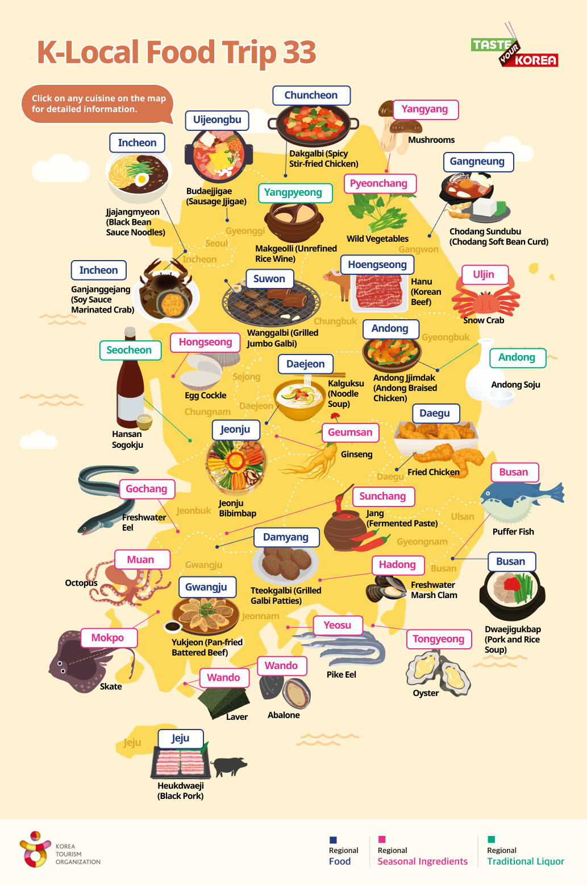

Delicious Korean Food
Korea is a paradise for food lovers. From street food to traditional dishes, there’s something for every taste.
Must-Try Dishes
- Bibimbap: A colorful rice bowl with vegetables, meat, and egg.
- Kimchi: Fermented spicy cabbage, served with almost every meal.
- Tteokbokki: Spicy rice cakes often sold by street vendors.
These foods not only taste amazing, but also tell the story of Korea’s rich culinary heritage. Don’t miss out!